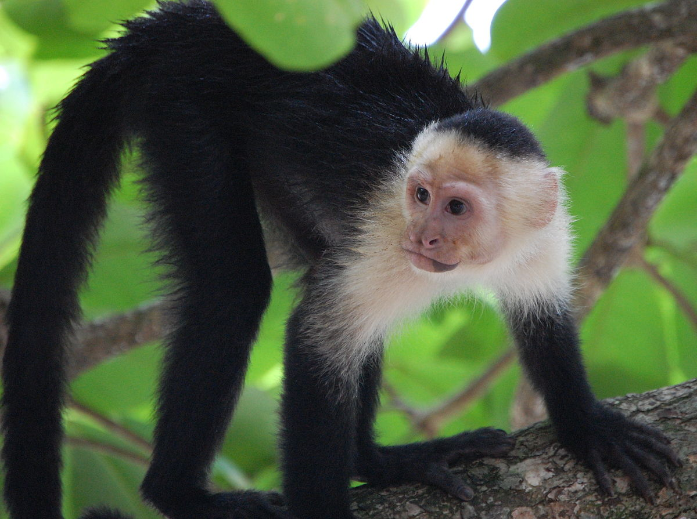
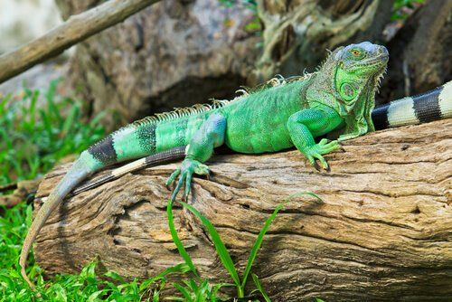

Los Animales:
Animales Vertebrados:
Mamíferos:
Los mamíferos son animales vertebrados cuya principal característica es que el desarrollo fetal ocurre en el interior de las hembras y que después, las crías se alimentan de la leche de las glándulas mamarias de la madre.
Otra de las principales características de los mamíferos es que disponen del sistema nervioso central más desarrollado de la naturaleza, lo que les permite percibir estímulos y responder ante ellos de formas muy complejas. Gracias a ello los mamíferos son capaces de anticiparse a peligros que saben que pueden resultar dañinos.
Además, otro de los rasgos en común de los mamíferos es que la piel, en la mayoría de casos, está rodeada de pelo, algo de lo que no disponen los otros grupos de animales, y que son seres de sangre caliente, es decir, son capaces de conservar su temperatura corporal independientemente del medio.
Conocemos más de 5.400 especies de mamíferos: perros, caballos, elefantes, ratas, leones, osos, monos y, evidentemente, los humanos. No tienen por qué estar en la superficie terrestre, pues los murciélagos son mamíferos pese a poder volar, del mismo modo que lo son los delfines aunque sean organismos acuáticos.
 
Aves:
A grandes rasgos, las aves son los animales especializados en volar, aunque algunas de las especies han perdido la capacidad de hacerlo a lo largo de la evolución. Su principal característica es que su piel está recubierta de plumas.
Exceptuando los murciélagos, que son mamíferos, son los únicos animales capaces de volar, algo que se consigue gracias a la presencia de alas, unas estructuras anatómicas con la musculatura necesaria para permitir el vuelo activo. Junto a los mamíferos, son el único grupo de animales de sangre caliente.
Además, todas las aves disponen de pico, el cual sustituye a los dientes de los mamíferos. En este caso, se reproducen mediante huevos, es decir, el desarrollo fetal no se da en el interior de la hembra. Por lo tanto, pese a que la fecundación es interna, las crías se desarrollan en los huevos hasta que eclosionan cuando el individuo está listo para nacer.

Peces:
Los peces son los animales que habitan los medios acuáticos, por lo que deben estar adaptados a estos. Por ello, los peces tienen una piel recubierta en este caso de escamas y realizan la respiración a través de las branquias (no tienen pulmones), unos órganos que permiten captar el oxígeno del agua.
Pese a la gran variedad de morfologías, los peces tienen aletas que permiten su movimiento en el agua, tanto dulce como salada. Disponen también de lo que se conoce como vejiga natatoria, un órgano que permite a los peces ascender y descender en el agua sin problemas. Gracias a esta estructura son animales que funcionan como “submarinos”.
En este caso, la reproducción de los peces no solo es que se de mediante huevos, sino que la fecundación no es interna. Las hembras expulsan los huevos y los machos liberan las células sexuales para fecundar los huevos en el exterior.
Son animales de sangre fría, es decir, no son capaces de regular su temperatura corporal, por lo que dependen de las condiciones del medio.
Los peces fueron los primeros animales vertebrados que poblaron la Tierra hace 400 millones de años. Por lo tanto, todos los otros vertebrados, incluidos nosotros, procedemos de ellos.


Anfibios:
Los anfibios son animales vertebrados cuya principal característica es que pasan por una metamorfosis, es decir, sufren unos cambios morfológicos muy grandes para dejar de ser crías a ser adultos. La primera fase de su ciclo (renacuajo) es en el agua y la segunda, en la tierra. De ahí su nombre, que procede del griego “amphi” (doble) y “bio” (vida).
Su piel, a diferencia de todos los otros animales, no está recubierta por ninguna estructura (ni pelo, ni escamas, ni plumas…) ya que es a través de ella que capta el oxígeno con un proceso que se conoce como respiración cutánea. Además, algunas especies tienen glándulas venenosas en la piel que segregan sustancias tóxicas.
Tienen una reproducción similar a la de las aves, pues la fecundación es interna (hay cópula entre macho y hembra) pero el desarrollo fetal ocurre en los huevos que se ponen en el agua, de donde saldrán los renacuajos.
Son animales de sangre fría, por lo que deben mantenerse siempre húmedos para conservar su temperatura corporal. Es por ello que los anfibios siempre se encuentran cerca de ambientes acuáticos, pues deben estar constantemente con agua en su piel.
Las ranas, los sapos, las salamandras, los tritones y las cecilias son algunos de los ejemplos de anfibio más comunes.
Reptiles:
Los reptiles son animales vertebrados cuya principal característica es la presencia de escamas en la piel y el hecho de ser de sangre fría, por lo que no pueden conservar su temperatura corporal. En este caso, sin embargo, a diferencia de los anfibios, los reptiles tienden a permanecer en el sol.
La respiración de los reptiles, además, es siempre a través de pulmones. Incluso los cocodrilos, las tortugas marinas y otros reptiles acuáticos respiran mediante estos órganos. Estos tienen una capacidad pulmonar muy elevada y reducen su metabolismo para aguantar mucho tiempo bajo el agua sin respirar.
Fruto de este lento metabolismo, es común que los reptiles, pese a cazar de forma feroz y ser depredadores muy eficientes, necesiten un largo período de descanso después de haber comido, pues la digestión les toma mucho tiempo.
Los reptiles tienen una reproducción similar a la de las aves y los anfibios, pues la fecundación ocurre en el interior de la hembra pero esta pone los huevos en el exterior, donde se desarrollarán los individuos.
Muchos reptiles, además, son los únicos animales que han desarrollado glándulas venenosas en su dentadura. Ejemplo de ello son muchas serpientes y los dragones de Komodo.
Son uno de los grupos de animales más antiguos de la Tierra (en su día llegaron a dominarla) y tenemos: serpientes, tortugas, cocodrilos, iguanas, camaleones, lagartijas...

